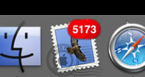

Ook zo druk?
maandag 8 maart 2004 | Persoonlijk

Voor de duidelijkheid: we zijn op het werk een nieuwe mailinglist backend aan het testen. Vandaar 5173 test emailtjes. Maar anders is het ook wel gewoon druk ;-)
Bovendien heb ik de afgelopen week met de handen in het haar gezeten door mijn nieuwe Powermac G5. Maar daarover later wel meer...